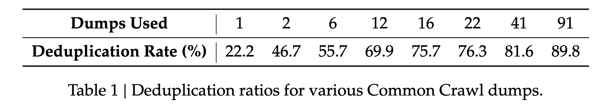
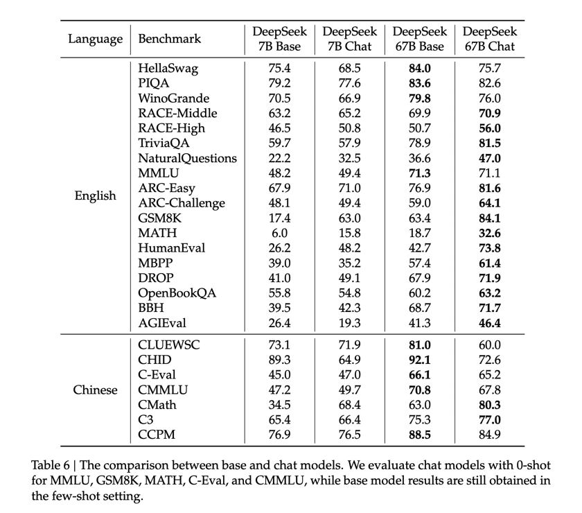

DeepSeek LLM Scaling Open-Source Language Models with Longtermism
DeepSeek LLM Scaling Open-Source Language Models with Longtermism
摘要
开源大型语言模型（LLMs）的快速发展确实令人瞩目。然而，先前文献中描述的缩放定律得出了不同的结论，这给基于缩放定律的LLM蒙上了一层阴影。我们深入研究了缩放定律，并提出了我们独特的发现，这些发现有助于在两种常用的开源配置，7B和67B模型中缩放大语言模型。在缩放定律的指导下，我们引入了DeepSeek LLM，这是一个致力于从长远角度推进开源语言模型的项目。为了支持预训练，我们开发了一个数据集，目前由2万亿个token组成，并且还在不断扩展。我们进一步对DeepSeek LLM Base模型进行有监督微调（SFT）和直接偏好优化（DPO），从而创建了DeepSeek聊天模型。我们的评估结果表明，DeepSeek LLM 67B在一系列基准测试中超过了LLaMA-2 70B，特别是在代码、数学和推理领域。此外，开放式评估显示，与GPT-3.5相比，我们的DeepSeek LLM 67B聊天表现出更优的性能。
1 介绍
在过去的几年里，基于纯解码器 transformer 的大型语言模型（LLM）（Vaswani et al.，2017）日益成为实现通用人工智能（AGI）的基石和途径。通过预测连续文本中的下一个单词，LLM在海量数据集上进行自监督的预训练，使其能够实现各种目标并具备许多能力，如小说创作、文本摘要、代码完成等。随后的发展，如监督微调和奖励建模，使大语言模型（LLM）能够更好地遵循用户的意图和指令。这赋予了他们更多的会话能力，并迅速扩大了他们的影响力。
这波浪潮是由闭源产品引发的，如ChatGPT（OpenAI，2022）、Claude（An-thropic，2023）和Bard（Google，2023），这些产品是用大量的计算资源和大量的标注成本开发的。这些产品显著提高了社区对开源LLM能力的期望，从而激发了一系列工作（Bai等人，2023；Du等人，2022；Jiang等人，2023）。其中，LLaMA系列模型（Touvron等人，2023a，b）尤为突出。它整合了一系列工作，创建了一个高效稳定的架构，构建了从7B到70B参数的性能良好的模型。因此，LLaMA系列已成为开源模型中架构和性能的事实基准。
继LLaMA之后，开源社区主要专注于训练固定大小（7B、13B、34B和70B）的高质量模型，往往忽视了对LLM缩放定律的研究探索（Hoffmann等人，2022；Kaplan等人，2020）。尽管如此，考虑到当前的开源模型仅处于通用人工智能（AGI）开发的初始阶段，对缩放定律的研究至关重要。此外，早期的研究（Hoffmann等人，2022；Kaplan等人，2020）在计算预算增加和超参数讨论未得到充分解决的情况下，对模型和数据的缩放得出了不同的结论。在本文中，我们广泛研究了语言模型的缩放定律，并将我们的发现应用于两种广泛使用的大模型配置参数，即7B和67B参数模型。我们的研究旨在为开源LLM的未来扩展奠定基础，为该领域的进一步发展铺平道路。具体来说，我们首先研究了batch_size和学习率learning_rate的缩放定律，并发现了它们随模型大小的变化趋势。在此基础上，我们对数据和模型规模的缩放定律进行了全面研究，成功揭示了最佳的模型/数据缩放分配策略，并预测了我们大模型的预期性能。此外，在开发过程中，我们发现从不同数据集得出的缩放规律存在显著差异。这表明数据集的选择会显著影响缩放行为，这表明在跨数据集上推广缩放定律时应该谨慎。
在我们的缩放定律的指导下，我们从头开始构建开源大型语言模型，并发布尽可能多的信息供社区参考。我们收集了2万亿个token用于预训练，主要是中文和英文。在模型级别，我们通常遵循LLaMA的架构，但用多步学习率调度器替换了余弦学习率调度器，在保持性能的同时促进了持续训练。我们从不同来源收集了100多万个监督微调（SFT）数据（欧阳等人，2022）。本文分享了我们在数据消融技术中不同SFT策略和发现的经验。此外，我们还利用了直接偏好优化（DPO）（Rafailov等人，2023）来提高模型的会话性能。
我们使用我们的基础模型和聊天模型进行广泛的评估。评估结果表明，DeepSeek LLM在各种基准测试中都超过了LLaMA-2 70B，特别是在代码、数学和推理领域。继SFT和DPO之后，DeepSeek 67B聊天模型在中英文开放式评估中的表现均优于GPT-3.5。这突显了DeepSeek 67B在生成高质量响应和用两种语言进行有意义的对话方面的卓越性能。此外，安全评估表明，DeepSeek 67B Chat在实践中可以提供无害的响应。
在本文的其余部分，我们首先在第2节介绍DeepSeek LLM的预训练基本概念，包括数据的组成、模型架构、基础设施和超参数。在第3节中，我们详细解释了我们发现的缩放定律及其含义。此外，我们讨论了选择预训练超参数背后的基本原理，同时考虑了从缩放定律分析中获得的见解。在第4节中，我们讨论了我们的微调方法，包括SFT和DPO阶段微调数据的组成和具体方法。然后，我们在第5节中介绍了DeepSeek LLM的详细评估结果，涵盖了基础模型和聊天模型，以及它们在开放式评估和安全评估中的表现。最后，我们在第6节讨论了DeepSeek LLM的当前局限性和未来方向。
2 预训练
2.1 数据
我们的主要目标是全面增强数据集的丰富性和多样性。我们从有价值的来源获得了宝贵的见解，如（Computer，2023；Gao et al，2020；Penedo et al，2023；Touvron et al，2023a）。为了实现这些目标，我们将我们的方法分为三个基本阶段：去重、过滤 和 重新混合。去重和重新混合阶段通过采样独立的样本来确保数据的多样化表示。过滤阶段提高了信息密度，从而实现了更高效和有效的模型训练。
我们采取了激进的去重策略，扩大了去重的范围。我们的分析表明，与单个文件去重相比，对整个Common Crawl语料库进行去重会导致更高的去重率。表1显示，在整体91个文件进行去重可以消除比单个文件多四倍的文档。

在过滤阶段，我们专注于为文档质量评估制定稳健的标准。这涉及到结合语言和语义评估的详细分析，从单个文档和全局文档的角度提供数据质量的视图。在重新混合阶段，我们调整了用于解决数据不平衡的方法，重点是增加代表性不足的领域的数据。这一调整目的是实现更平衡和更具包容性的数据集，确保数据集充分代表不同的观点和信息。
对于我们的 tokenizer，我们基于 tokenizers 库（Huggingface Team，2019）实现了 Byte-level Byte-Pair（BBPE）算法。预标分词被用来防止来自不同字符类别的 token 合并，如换行符、标点符号和中日韩（CJK）符号，类似于GPT-2（Radford等人，2019）。我们还选择按照（Touvron等人，2023a，b）中使用的方法将数字拆分为单个数字。根据我们之前的经验，我们将词表中的token数量设置为100000。tokenizer 在大约24GB的多语言语料库上进行了训练，我们用15个特殊 token 扩展了最终词表，使总词表大小达到100015。为了确保训练期间的计算效率，并为未来可能需要的任何其他特殊 token 预留空间，我们将模型的词表数目配置为102400用于训练。
2.2 模型结构
DeepSeek LLM模型结构的微观设计在很大程度上遵循了LLaMA的设计（Touvron等人，2023a，b），采用具有RMSNorm（Zhang和Sennrich，2019）功能的 pre-norm 结构，并使用SwiGLU（Shazeer，2020）作为前馈网络（FFN）的激活函数，中间层维度为\(\frac{8}{3}d_{model}\)。它还结合了旋转位置编码（Su等人，2024）用于位置编码。为了优化推理成本，67B模型使用分组查询注意力（GQA）（Ainslie等人，2023）而不是传统的多头注意力（MHA）。
然而，在宏观设计方面，DeepSeek LLM略有不同。具体来说，DeepSeek LLM 7B是一个30层的网络，而DeepSeek LLM 67B有95层。这些网络层的调整，在保持与其他开源模型的参数一致性的同时，也有助于模型pipeline 并行，以优化训练和推理。
与大多数使用分组查询注意力（GQA）的工作不同，我们在网络深度上扩展了67B模型的参数，而不是扩大FFN层中间宽度的常见做法，目的是为了获得更好的效果。详细的网络配置见表2。
2.3 超参数
DeepSeek LLM的初始化标准偏差为0.006，并使用AdamW优化器进行训练（Loshchilov和Hutter，2017），使用以下超参数：\(\beta = 0.9, \beta_{2} = 0.95\), 并且 \(weight\_decay=0.1\)。
在预训练期间采用多步学习率调度器，而不是典型的余弦调度器。具体来说，模型的学习率在2000个预热步骤后达到最大值，然后在处理了80%的训练令牌后降至最大值的31.6%。在90%的 token 之后，它进一步降低到最大值的10%。训练阶段的梯度剪裁设置为1.0。
根据我们的实证研究结果，我们观察到，在训练过程中尽管损失降低趋势存在一点差异，使用多步学习率调度器的最终性能与余弦调度器的性能基本一致，如图1（a）所示。当在保持模型大小固定的同时调整训练规模时，多步学习率调度器允许重用第一阶段的训练，为连续训练提供了独特的便利。因此，我们选择了多步学习率调度器作为我们的默认设置。我们还在图1（b）中证明，调整多步学习率调度器中不同阶段的比例可以产生稍好的性能。然而，为了平衡持续训练中的重用率和模型性能，我们选择了上述三个阶段分别为80%、10%和10%的分布。 批量大小和学习率随模型大小而变化。7B和67B模型预训练阶段的具体参数见表2。
2.4. 基础设施
我们使用名为HAI-LLM（High flyer，2023）的高效轻量级训练框架来训练和评估大型语言模型。数据并行性、张量并行性、序列并行性和1F1B流水线并行性被集成到这个框架中，就像在Megatron中所做的那样（Korthikanti等人，2023；Narayanan等人，2021；Shoeybi等人，2019）。我们还利用flash注意力（Dao，2023；Dao等人，2022）技术来提高硬件利用率。ZeRO-1（Rajbhandari等人，2020）被用来在数据并行列上划分优化器状态。还努力重叠计算和通信，以尽量减少额外的等待开销，包括ZeRO-1中最后一个微批处理的反向过程和减少分散操作，以及GEMM计算和顺序并行的所有收集/减少分散。一些层/操作符被融合以加快训练速度，包括LayerNorm、GEMM（只要可能）和Adam更新。为了提高模型训练的稳定性，我们以bf16精度训练模型，但以fp32精度累积梯度。执行原地交叉熵以减少GPU内存消耗，即：我们在交叉熵CUDA内核中将bf16 logits动态转换为fp32精度（而不是在HBM中预先转换），计算相应的bf16梯度，并用其梯度覆盖logits。 模型权重和优化器状态每5分钟异步保存一次，这意味着在偶尔出现硬件或网络故障的最坏情况下，我们将损失不超过5分钟的训练时间。这些临时模型检查点会定期清理，以避免
消耗了太多的存储空间。我们还支持从不同的3D并行配置恢复训练，以应对计算集群负载的动态变化。 至于评估，我们在生成任务中使用vLLM（Kwon等人，2023），在非生成任务中采用连续批处理，以避免手动调整批大小并减少令牌填充。
3 缩放定律
对缩放定律的研究（Hestness等人，2017）早于大型语言模型的出现。缩放定律（Henighan等人，2020；Hoffmann等人，2022；Kaplan等人，2020）表明，随着计算预算的增加到 \(C\)，模型容量\(N\), 数据规模 \(D\)，模型性能可以得到可预测的提高。 当模型容量由模型参数 \(N\) 表示，数据容量表示为 \(D\)，token 的数量 \(C\) 可以近似为 \(C = 6ND\)。因此，在增加算力的同时，如何优化模型参数和数据规模之间的分配也是缩放定律的一个关键研究目标。
随着LLM的发展（Dai等人，2019；Radford等人，2019），更大的模型实现了意想不到的显著性能改进，将缩放定律的研究推向了一个新的高峰。缩放定律的结果表明，扩大算力持续产生显著的收益，这进一步鼓励了模型规模的增加（Brown等人，2020；Smith等人，2022）。
然而，如表4所示，关于最优模型/数据缩放分配策略的早期工作（Hoffmann等人，2022；Kaplan等人，2020）得出了不同的结论，这引发了人们对缩放定律泛化性的怀疑。此外，这些研究往往缺乏对超参数设置的完整描述，这使得在不同计算预算下的模型是否达到最佳性能变得不确定。因此，我们在本节中重新审视了缩放定律，以解决这些不确定性，并确保我们走在有效扩大计算规模的正确道路上，这反映了长期前景，是开发不断改进模型的关键。
为了确保不同计算预算下的模型能够达到最佳性能，我们首先研究了超参数的缩放规律。根据经验，已经观察到，当改变计算预算时，训练期间大多数参数的最佳值不会改变。因此，这些参数与第2.3节中概述的参数一致，并且在不同的计算预算中保持不变。然而，对性能影响最大的超参数，即批处理大小和学习率，进行了重新检查。
早期的工作（Goyal等人，2017；McCandlish等人，2018；Shallue等人，2019；Smith等人，2017，Zhang等人，2019）为设置批量大小和学习率提供了一些经验观察，但我们发现这些观察在我们的初步实验中适用性有限。通过大量实验，我们模拟了计算预算之间的幂律关系𝐶 以及最佳批量大小和学习率。这种关系，我们称之为超参数的缩放定律，为确定最优超参数提供了一个经验框架。这种方法确保跨不同计算预算的模型能够达到接近最佳的性能。 然后，我们研究了模型和数据尺度的缩放规律。为了降低实验成本和拟合难度，我们采用了Chinchilla的IsoFLOP轮廓方法（Hoffmann等人，2022）来拟合缩放曲线。为了更准确地表示模型比例，我们使用了一种新的模型比例表示法，即非嵌入FLOP/token𝑀, 替换之前使用的模型参数𝑁, 并用近似计算预算公式代替𝐶 = 6𝑁 𝐷
更精确𝐶 = 𝑀𝐷. 实验结果为最佳模型/数据扩展分配策略和性能预测提供了见解，并准确预测了DeepSeek LLM 7B和67B模型的预期性能。 此外，在探索标度定律的过程中，我们使用的数据经历了多次迭代，质量不断提高。我们试图在各种数据集上拟合缩放曲线，发现数据质量显著影响最佳模型/数据缩放分配策略。数据质量越高，分配给模型缩放的计算预算就越多。这意味着，在相同的数据规模下，高质量的数据可以推动更大模型的训练。最优模型/数据扩展分配策略的差异也可以作为评估数据质量的间接方法。我们将继续密切关注数据质量的变化及其对缩放规律的影响，并在未来的工作中提供更多的分析。 总之，我们在标度定律方面的贡献和发现可以总结如下：
• 我们建立了超参数的标度律，为确定最优超参数提供了经验框架。 • 代替模型参数𝑁, 我们采用非嵌入FLOP/令牌𝑀 以表示模型规模，从而产生更准确的最优模型/数据缩放分配策略，并更好地预测大规模模型的泛化损失。 • 预训练数据的质量会影响最佳的模型/数据扩展分配策略。数据质量越高，分配给模型缩放的计算预算就越多。
3.1 超参数的缩放定律
我们最初在计算预算为1e17的小规模实验中对批量大小和学习率进行了网格搜索，特定模型大小（177M FLOP/token）的结果如图2（a）所示。结果表明，在批量大小和学习率的广泛选择范围内，泛化误差保持稳定。这表明，在相对较宽的参数空间内可以实现接近最佳的性能。
1 1e17 FLOP（177M FLOP/代币） （b）1e20 FLOP（2.94B FLOP/令牌）
图2| 1e17和1e20 FLOP的训练损失与批量大小和学习率的关系。 然后，我们利用上述多步学习率调度器来有效地训练具有不同批量大小、学习率和计算预算的多个模型，范围从
通过重复使用第一级，1e17至2e19。考虑到参数空间中的冗余，我们将泛化误差超过最小值不超过0.25%的模型所使用的参数视为接近最优的超参数。然后我们调整了批量大小𝐵 学习率𝜂 关于计算预算𝐶. 如图3所示，拟合结果表明，最佳批量大小𝐵 随着计算预算的增加而逐渐增加𝐶, 而最佳学习率𝜂 逐渐减少。这与扩大模型时批量大小和学习率的直观经验设置是一致的。此外，所有接近最优的超参数都落在一个宽频带范围内，这表明在这个区间内选择接近最优的参数相对容易。我们为批量大小和学习率拟合的最终公式如下： 𝜂opt=0.3118·𝐶 −0.1250
𝐵opt
= 0.2920 · 𝐶 0.3271 (1)
（a） 批量缩放曲线 （b）学习率缩放曲线
图3 |批量大小和学习率的缩放曲线。灰色圆圈表示泛化误差超过最小值不超过0.25%的模型。虚线表示适合较小模型的幂律。蓝色恒星代表DeepSeek LLM 7B和67B。
我们在一系列具有1e20计算预算的模型上验证了我们的公式，特定模型大小（每个令牌2.94B FLOP）的结果如图2（b）所示。结果表明，拟合参数集中在最优参数空间内。后续部分还表明，我们为DeepSeek LLM 7B和67B模型拟合的参数同样取得了良好的性能。 然而，值得注意的是，我们还没有考虑计算预算之外的因素的影响𝐶 关于最优超参数。这与一些早期的研究（Kaplan等人，2020；McCandlish等人，2018）不一致，这些研究表明，最佳批量大小可以建模为仅与泛化误差有关𝐿. 此外，我们观察到，在具有相同计算预算但模型/数据分配不同的模型中，最优参数空间略有不同。这表明需要进一步的研究来了解超参数的选择和训练动力学。我们将在未来的工作中探索这些方面。
3.2 估计最优模型和数据缩放 在推导出拟合近最优超参数的公式后，我们开始拟合缩放曲线，并分析最优模型/数据缩放分配策略。该策略涉及找到模型缩放指数𝑎 数据缩放指数𝑏 那就满足了𝑁opt├𝐶𝑎
and 𝐷opt├𝐶𝑏分别。数据规模𝐷 可以用数据集中的令牌数量来一致地表示。在之前的工作中，模型尺度通常由模型参数表示，其中包含非嵌入参数𝑁1 （Kaplan等人，2020）和完整参数 𝑁2 （Hoffmann等人，2022）。计算预算之间的关系𝐶 模型/数据规模可以近似描述为𝐶 = 6𝑁 𝐷, 这意味着我们可以使用6𝑁1 or 6𝑁2 以近似模型比例。然而，由于两者均为6𝑁1 and 6𝑁2 不考虑注意力操作的计算开销，以及6𝑁2 还包括词汇计算，这对模型的容量贡献较小，在某些设置下，它们都有明显的近似误差。 为了减少这些错误，我们引入了一种新的模型规模表示：非嵌入FLOP/token𝑀. 𝑀 包括注意力操作的计算开销，但不考虑词汇计算。模型比例由表示𝑀, 计算预算𝐶 可以简单地表示为𝐶 = 𝑀𝐷. 6之间的具体区别𝑁1, 6𝑁2, and 𝑀 如以下公式所示： 6𝑁1 = 72 𝑛图层𝑑2
6𝑁2 = 72 𝑛图层𝑑2 𝑀 = 72 𝑛图层𝑑2
- 6 𝑛vocab𝑑model
- 12 𝑛图层𝑑模型𝑙seq
2.
哪里𝑛layer表示层数，𝑑model表示模型宽度，𝑛vocab是词汇量，以及𝑙seq是序列长度。我们评估了不同尺度模型中这三种表示之间的差异，如表3所示。结果表明，6𝑁1 and 6𝑁2 高估或低估了不同尺度模型的计算成本。这种差异在小规模模型中尤为明显，差异高达50%。在拟合缩放曲线时，这种不准确可能会引入大量的统计误差。关于模型比例的不同表示，请参阅附录A.2进行进一步分析。
𝑛层 𝑑model 𝑛vocab 𝑙seq 𝑁1 𝑁2 𝑀 6𝑁1 𝑀 6𝑁2 𝑀
- 512 25.2米 77.6米 352米 0.43 1.32 12 768 84.9米 164米 963米 0.53 1.02 24 1024 302米 407米 3.02B 0.60 0.81 24 2048 102400 4096 1.21B 1.42B 9.66B 0.75 0.88 32 4096 6.44B 6.86B 45.1B 0.85 0.91 40 5120 12.6B 13.1B 85.6B 0.88 0.92 80 8192 64.4B 65.3B 419B 0.92 0.94 表3 |模型尺度表示的差异和非嵌入参数的差异 𝑁1 并完成参数𝑁2 相对于非嵌入FLOP/令牌𝑀.
收养后𝑀 为了表示模型规模，我们的目标可以更清楚地描述为：给定计算预算𝐶 = 𝑀𝐷, 找到最优模型比例𝑀opt和数据规模𝐷选择最小化模型的泛化误差。这一目标可以正式化为：
𝑀opt（𝐶），𝐷opt（ 𝑀,𝐷 s.t. 𝐶=𝑀𝐷
𝐿(𝑁, 𝐷) (3)
为了降低实验成本和拟合难度，使用了Chinchilla的IsoFLOP轮廓方法（Hoffmann等人，2022）来拟合缩放曲线。我们选择了8个不同的
（a） IsoFLOP曲线 （b）最佳模型缩放（ c）最佳数据缩放
图4|IsoFLOP曲线和最佳模型/数据分配。IsoFLOP曲线中的度量是验证集上的每字节比特数。最优模型/数据缩放曲线中的虚线表示适合较小模型的幂律（灰色圆圈）。
计算从1e17到3e20的预算，并为每个预算设计了大约10个不同的模型/数据规模分配。每个预算的超参数由公式（1）确定，泛化误差在一个独立的验证集上计算，该验证集与训练集分布相似，包含1亿个令牌。 图4展示了IsoFLOP曲线和模型/数据缩放曲线，这些曲线是通过使用每个计算预算的最佳模型/数据分配进行拟合的。最优非嵌入FLOP/token的具体公式𝑀opt和最优令牌𝐷opt如下： 𝑀opt=𝑀基地·𝐶𝑎, 𝑀基数=0.1715， 𝑎 = 0.5243
𝐷opt=𝐷base
· 𝐶𝑏, 𝐷base
4. = 5.8316, 𝑏 = 0.4757
此外，我们根据计算预算拟合了损失缩放曲线𝐶 并预测了DeepSeek LLM 7B和67B的泛化误差，如图5所示。结果表明，使用小规模实验可以准确预测
图5 |性能缩放曲线。度量是验证集上的每字节比特数。虚线表示适合较小模型的幂律（灰色圆圈）。蓝色恒星代表DeepSeek LLM 7B和67B。缩放曲线很好地预测了它们的性能。
计算预算为1000倍的模型的性能。这为更大规模的训练模型提供了信心和指导。
3.3. 不同数据的缩放定律 在DeepSeek LLM的开发过程中，数据集经过多次迭代优化，在提高整体质量的同时调整了不同数据源的比例。这使我们能够进一步分析不同数据集对缩放定律的影响。 我们使用三个不同的数据集研究了缩放规律：早期内部数据、当前内部数据和OpenWebText2，后者在之前的缩放规律研究中得到了应用（Kaplan等人，2020）。我们的内部数据评估显示，当前的内部数据比早期的内部数据具有更高的数据质量。此外，OpenWebText2的质量甚至超过了目前的内部数据，因为它的规模较小，可以进行更细致的处理。
方法 Coeff。𝑎 where 𝑁opt（𝑀opt）𝐶𝑎 Coeff。𝑏 where 𝐷opt├𝐶𝑏 OpenAI（OpenWebText2） 0.73 0.27 钦奇利亚（MassiveText） 0.49 0.51 我们的（早期数据） 0.450 0.550 我们的（当前数据） 0.524 0.476 我们的（OpenWebText2） 0.578 0.422 表4|模型缩放系数和数据缩放系数随训练数据分布而变化。分析中一个有趣的观察结果是，这三个数据集的最佳模型/数据扩展分配策略与数据质量一致。如表4所示，随着数据质量的提高，模型缩放指数𝑎 逐渐增加，而数据缩放指数𝑏 减少，这表明增加的计算预算应该更多地分配给模型而不是数据。这一发现也可能解释了早期缩放定律研究中观察到的最佳模型/数据缩放分配的显著差异。 对这一发现的一个直观推测是，高质量的数据通常意味着经过充分训练后逻辑清晰，预测难度较小。因此，在增加计算预算时，扩大模型大小更有利。我们将继续密切关注数据质量的变化及其对缩放规律的影响，并在未来的工作中提供更多的分析。
4 对齐
我们收集了约150万个中英文指令数据实例，涵盖了广泛的有益和无害主题。我们有用数据包含120万个样本，其中31.2%用于一般语言任务，46.6%用于数学问题，22.2%用于编码练习。安全数据由30万个样本组成，涵盖了各种敏感主题。 我们的路线流程包含两个阶段。
4.1 有监督微调
我们用4个迭代周期对7B模型进行了微调，但67B模型只有2个迭代周期，因为我们观察到67B模型的过拟合问题很严重。我们观察到，7B模型的GSM8K（Cobbe等人，2021）和HumanEval（Chen等，2021）效果持续得到改善，而67B模型很快就会达到上限。7B和67B模型的学习率分别为1e-5和5e-6。除了监控基准精度外，我们还在微调过程中评估聊天模型的重复率。我们总共收集了 3868 个中英文提示词，并确定了生成的响应中没有终止而是无休止地重复一段文本。我们观察到，随着数学SFT数据量的增加，重复率趋于上升。这可以归因于数学SFT数据在推理中偶尔会包含类似的模式。因此，较弱的模型很难掌握这种推理模式，导致重复的反应。为了解决这个问题，我们尝试了两阶段微调和DPO（Rafailov等人，2023），这两种方法几乎可以保持基准分数并显著减少重复。
4.2 DPO
为了进一步增强模型的能力，我们使用了直接偏好优化算法（Rafailov等人，2023），这被证明是一种简单但有效的LLM对齐方法。我们构建了DPO训练在有益性和无害性方面的偏好数据。为了获得有用的数据，我们收集了多语言提示，涵盖了创意写作、问答、指令遵循等类别。然后，我们使用DeepSeek Chat模型作为响应候选生成了响应。类似的操作也应用于无害偏好数据构建。
我们为DPO训练了一个迭代，学习率为5e-6，批处理大小为512，我们使用了学习率预热和余弦学习率调度器。我们发现，DPO可以增强模型的开放式生成技能，同时在标准基准之间产生的性能差异很小。
5 评价
5.1 公共基准评估
我们根据内部评估框架，在一系列中英文公共基准上评估我们的模型。
- 多学科多项选择数据集，包括MMLU（Hendrycks等人，2020）、C-Eval（Huang等人，2023）和CMMLU（Li等人，2023年）。
- 语言理解和推理数据集，包括HellaSwag（Zellers等人，2019）、PIQA（Bisk等人，2020）、ARC（Clark等人，2018）、OpenBookQA（Mihailov等人，2018年）和BigBench Hard（BBH）（Suzgun等人，2022）。
- 封闭书问答数据集，包括TriviaQA（Joshi等人，2017）和Natu ralQuestions（Kwiatkowski等人，2019）。
- 阅读理解数据集，包括RACE Lai等人（2017年）和DROP（Dua等人，2019年），C3（Sun等人，2019）。
- 参考消歧数据集，包括WinoGrande Sakaguchi等人（2019）和CLUEWSC（Xu等人，2020）。
- 语言建模数据集，包括Pile（Gao等人，2020）。
- 中国理解和文化数据集，包括CHID（Zheng等人，2019）和CCPM（Li等人，2021）。
- 数学数据集，包括GSM8K（Cobbe等人，2021年）、Math（Hendrycks等人，2021）和CMath（Wei等人，2023年）。
- 代码数据集，包括HumanEval（Chen等人，2021）和MBPP（Austin等，2021）。 包括AGIEval在内的标准化检查（Zhong等人，2023）。
我们将基于困惑度的评估准则，应用于需要从多个选项中选择答案的数据集。这些数据集包括HellaSwag、PIQA、WinoGrande、RACE Middle、RACE High、MMLU、ARC Easy、ARC Challenge、OpenBookQA、CHID、C-Eval、CMMLU、C3和CCPM。这里的基于困惑度的评估是指计算每个选项的困惑度，并选择最低的一个作为模型预测。对于ARC和OpenBookQA，我们使用无条件归一化计算困惑度（Brown等人，2020），对于其他数据集，我们使用长度归一化。 我们对TriviaQA、NaturalQuestions、DROP、MATH、GSM8K、HumanEval、MBPP、BBH、AGIEval、CLUEWSC和CMath应用基于生成的评估。这里的基于生成的评估是指让模型生成自由文本，并从生成的文本中解析结果。对于基于生成的评估，我们使用贪婪解码。 我们将基于语言建模的评估应用于桩测试，这意味着计算测试语料库上的每字节比特数。 我们使用2048或4096作为不同基准的最大序列长度。评估格式的详细信息见附录A.6。
5.1.1 基础模型
表5显示了评估基准的主要结果。尽管DeepSeek模型在2T双语语料库上进行了预训练，但它们在英语理解基准上的表现与LLaMA2模型相当，LLaMA2也消耗2T token，但专注于英语。此外，与LLaMA2 70B相比，DeepSeek 67B在MATH、GSM8K、HumanEval、MBPP、BBH和中国基准测试上的性能要好得多。我们在附录A.3中显示了基准曲线。我们可以看到，随着模型的扩展，一些任务性能得到了提升，如GSM8K和BBH。鉴于我们在同一数据集上训练了7B和67B，这种改进的出现可以归因于大型模型强大的少镜头学习能力。然而，随着数学数据比例的增加，小型和大型模型之间的差异可能会缩小。 一个有趣的观察结果是，DeepSeek 67B相对于LLaMA2 70B的优势大于DeepSeek 7B相对于LLaMA27B的优势。这一现象凸显了语言冲突对较小模型的更大影响。此外，LLaMA2在某些中文任务上表现出色，如CMath，尽管没有接受过专门的中文数据培训。这表明，某些基本能力，如数学推理，可以在语言之间有效地传递。然而，像CHID这样的任务涉及评估汉语成语的使用情况，需要模型在预训练期间消耗大量的汉语标记。在这种情况下，LLaMA2的表现明显不如DeepSeek LLM。
5.1.2 聊天模型
表6展示了DeepSeek聊天模型的结果，展示了调优后大多数任务的总体改进。然而，在某些情况下某些任务被拒绝了。

-
知识：我们观察到基础模型和聊天模型在知识相关任务中的波动，如TriviaQA、MMLU和C-Eval。然而，我们不认为这种微小的波动表明SFT后知识的获取或丧失。SFT的价值在于学习在聊天模型的零样本设置中获得与基本模型的少热点设置相当的分数的能力，这与真实场景一致。例如，聊天模型的0次MMLU性能与基本模型的5次MMLU的性能相当。
-
推理：由于很大一部分SFT实例采用CoT格式，Wei等人（2022）的聊天模型在推理任务方面略有改进，如BBH和NaturalQuestions。然而，我们认为SFT阶段不是学习推理能力，而是学习推理路径的正确格式。
-
性能下降任务：无论选择何种模型大小或预先训练的检查点，一些任务的性能在微调后都会持续下降。这些特定的任务通常涉及完形填空任务或句子完成任务，如HellaSwag。可以合理地假设纯语言模型更有能力处理此类任务。
-
数学和代码：经过微调，我们的模型在数学和编码任务方面有了显著改进。例如，HumanEval和GSM8K得分提高了20多个点。我们对此的解释是，基础模型最初没有充分适应这些任务，SFT阶段通过广泛的SFT数据学习了编码和数学方面的额外知识。然而，值得注意的是，该模型的功能可能主要集中在代码补全和代数问题上。为了全面了解数学和编码，在预训练阶段纳入各种数据至关重要，这是未来的工作。我们在附录a.4中对代码和数学任务进行了详细分析。
在7B模型微调中，我们最初使用所有数据对模型进行微调。随后，引入了第二阶段，该阶段不包括数学和代码数据。这种方法背后的动机是，第一阶段模型的重复率为2.0%，降低到1.4%
在第二阶段调整后，同时保持基准分数。在67B模型的情况下，经过第一阶段的微调，重复率已经低于1%，第二阶段会损害模型在基准上的得分。因此，67B模型只进行了一个阶段的SFT。
5.2 开放式评估
对于聊天模型，除了观察标准基准上的指标外，在开放域和开放式问题中生成的结果的质量直接影响实际的用户体验。因此，我们分别在中文和英文任务中测试了聊天模型的开放式生成能力。
5.2.1 中国开放式评估
对于中国开放式评估，我们在高质量的开放式问题测试集AlignBench上测试了我们的聊天模型在不同领域的综合性（Liu等人，2023）。AlignBench共有8个主要类别，36个次要类别，包含683个问题。对于每个问题，除了提示外，AlignBench还为GPT-4提供专业的参考答案和评分模板，以判断回答的质量。 我们使用官方AlignBench Github代码库来实现对
我们的模型。我们将关键温度参数与原始设置严格对齐：对于角色扮演、写作能力和开放式问题，生成温度设置为0.7；而对于其他任务，生成温度设置为0.1。 AlignBench排行榜如表7所示。我们可以发现，我们的DeepSeek 67B聊天模型超越了ChatGPT和其他基线模型，仅次于GPT-4的两个版本。这表明，与其他开源或专有的中文大型语言模型相比，我们的模型在各种中文任务中表现出色。DPO模型在几乎所有指标上都有所改善，这表明了DPO训练过程对模型对齐的积极影响。 对于基本的中文任务，我们的模型在所有模型中处于第一层，我们的DPO模型的中文基本语言能力甚至高于最新版本的GPT-4。对于高级中文推理任务，我们的模型得分明显高于其他中文LLM，并且有明显的差距，这表明我们的模型在更复杂的中文逻辑推理和数学计算中表现出色。
5.2.2 英语开放式评估
对于英语开放式评估，我们使用MT Bench基准（Zheng等人，2023），其中包含8类不同的多轮问题。如表8所示，我们的DeepSeek LLM 67B Chat优于其他开源模型，如LLaMA-2-Chat Touvron等人（2023b）70B、Xwin 70B v0.1和TÜLU 2+DPO 70B（Ivison等人，2023），得分为8.35，与GPT-3.5-turbo相当。此外，在DPO阶段之后，我们的DeepSeek LLM 67B聊天DPO将平均得分进一步提高到8.76，仅落后于GPT-4（OpenAI，2023）。这些结果说明了DeepSeek LLM强大的多匝开放式生成能力。
5.3 进行评估
数据污染和基准过拟合是评估LLM的两个挑战。一种常见的做法是利用最近发布的测试集来评估模型作为保留的测试集。 LeetCode：为了评估模型的编码能力，我们利用了LeetCode每周竞赛（每周竞赛351-372，双周竞赛108-117，从2023年7月到2023年11月）中的问题。我们通过从LeetCode抓取数据获得了这些问题，LeetCode由126个问题组成，每个问题有20多个测试用例。所采用的评估指标类似于HumanEval。在这方面，如果模型的输出成功通过了所有测试用例，则认为该模型有效地解决了问题。该模型的编码能力为
如下图所示，其中y轴表示pass@1域内人工评估测试得分，x轴表示pass@1在域外LeetCode每周竞赛问题上得分。LeetCode测试数据将很快与DeepSeek Coder技术报告一起发布。 匈牙利国家高中考试：根据Grok-1，我们使用匈牙利国家高中测试评估了模型的数学能力。该考试包括33道题，模型的分数是通过人工注释确定的。我们遵循solution.pdf中的评分指标来评估所有模型。¬ 评估后的指令：2023年11月15日，谷歌根据评估数据集发布了一条指令（Zhou等人，2023）。他们识别出了25种可验证的指令，并构建了大约500个提示，每个提示包含一个或多个可验证指令。我们使用提示级别松散度量来评估所有模型。
模型 LeetCode 匈牙利语考试 IFEFal GPT-4 48.4 68 79.3 ChatGLM3 6B 2.4 32 29.7 DeepSeek LLM 7B聊天 4.7 28.5 41.2 百川2聊天13B 1.6 19.5 44.5 易聊天34B 7.9 39 48.4 Qwen 72B聊天室 12.7 52 50.8 DeepSeek LLM 67B聊天 17.5 58 55.5 表9 |进行数据集评估。 我们对我们的模型与不同规模的各种基线模型进行了比较分析，即Qwen 72B Chat（Bai等人，2023）、ChatGLM3（Du等人，2022）、Baichuan2（Yang等人，2024）和Yi-34B Chat。我们的观察表明，即使某些小模型在传统基准上取得了有希望的结果，在这些保留的数据集上，大模型和小模型之间也存在显著的性能差距。例如，ChatGLM3在代码测试集MBPP上的得分为52.4，接近DeepSeek 67B。然而，当在新的基准测试中进行评估时，其性能与DeepSeek 67B相比明显不足。在数学数据集中也观察到了类似的趋势，其中ChatGLM3在GSM8K上非常强（72.3），但它在匈牙利考试成绩中的表现不如大型模型。此外，指令跟踪能力表明，全计算起着至关重要的作用。¬ DeepSeek 7B和67B型号使用相同的训练管道，但它们的性能存在显著差异。通过我们的主观评估，我们观察到，当将模型大小扩展到67B时，各种任务的智力存在显著差异。虽然DeepSeek 7B在标准基准测试中落后于其他较小的语言模型，但与其他模型相比，它在延迟任务上的表现相对值得称赞。
5.4 安全评估 我们深刻认识到安全对一般人工智能的重要性。建立一个真正有用的人工智能模型的前提是，它具有与人类一致的价值观，并对人类表现出友好。我们将模型安全保证纳入整个培训过程，包括预培训、SFT和DPO。 为了验证我们模型的安全性，我们成立了一个由20人组成的专家团队
类别 子类别 #安全答案/#案例总数
歧视偏见问题
侵犯他人合法权益
商业秘密与知识产权 （商业秘密和知识产权）
违法违规行为 （违法违规行为）
其他安全问题 （其他安全问题）
隐私权 （隐私权），信息权益 （信息权），其他合法权益 （其他法定权利） 侵犯他人知识产权 （侵犯他人知识产权）， 垄断和不正当竞争行为 （垄断和不公平竞争行为）， 其他商业违法违规行为 （其他商业违法和不合规行为）， 违反商业道德 （违反商业道德），泄露他人商业机密 （泄露他人商业秘密） 邪教迷信 （邪教和迷信），色情 （色情），赌博 （赌博）， 毒品和违禁品 （毒品和违禁物品），侮辱谩骂 （侮辱和虐待），暴力行为 （暴力行为）， 涉黑涉恶 （参与有组织犯罪），其他违法违规行为 （其他违法违规行为） 幻觉和真实性问题 （幻觉与现实问题），时效性问题 （时间敏感问题）， 我认知问题 （自我识别问题），其他敏感话题 （其他敏感话题），
281/300
290/300
767/800
表10 |我们的安全评估分类。表的最右侧列列出了每个类别的测试用例总数和我们的模型（DeepSeek-67B-Chat）提供的安全答案数量。试题的注释和生成结果的评估由专业人员团队进行。我们可以观察到，我们的模型在各种类型的安全测试集上表现出很强的安全性。 并构建了与人类价值观相一致的安全内容分类体系（安全评估分类如表10所示）。随后，专家团队为每个安全子类别手动构建了数十个高质量的测试用例。除了关注安全内容领域的多样性外，我们还关注安全内容格式的多样性。臭名昭著的“祖母”漏洞表明，模型可能会被查询的表面格式欺骗，从而提供不安全的响应。因此，在设计问题时，专家团队也注重多样化的探究方式。他们通过诱导、角色扮演、多回合对话、预设位置等方式构建了各种安全问题。最终，我们获得了一个包含2400个问题的安全测试集。此外，专家组还为每种不同的内容类型和格式类型构建了安全审查的基本指导原则。 对于我们模型在这个测试集上的输出结果，我们手动检查了它的安全性。我们的审查团队训练有素，并对注释结果进行了交叉验证。注释器对每个问题执行三类注释：安全、不安全和模型拒绝。我们测试了DeepSeek 67B聊天模型的安全性，结果如表10所示。表中列出了每个安全类别的测试问题数量和我们的模型通过的安全测试数量。我们将安全回答和模型拒绝的测试用例都标记为安全响应。结果表明，我们的模型在众多安全测试类别中表现出良好的安全性能。 为了补充我们现有的安全方法，我们使用“不要回答”数据集（Wang等人，2023）进一步丰富了我们的评估，以评估我们的DeepSeek 67B聊天模型的安全机制。该数据集的939个风险分类提示有助于突出我们模型的增强功能。如表11所示，DeepSeek 67B聊天模型表现出了显著的性能，得分为97.8，高于ChatGPT和GPT-4。该分数不仅衡量了我们的模型安全处理敏感查询的能力，而且使其在该领域的领先模型中具有竞争力。
5.5 讨论
在整个开发过程中，我们在构建LLM方面发现了一些有趣的发现。
- 分段微调：正如我们上面提到的，小模型需要对数学和代码数据集进行更长时间的微调，但这会损害模型的对话能力，例如增加重复行为。为了解决这个问题，我们实施了分阶段的微调过程。在这种方法中，第一阶段涉及对所有可用数据进行微调，而第二阶段则专门侧重于对会话数据进行微调。
表12显示了两阶段训练过程的结果。这些结果清楚地表明，第二阶段不会影响模型在代码和数学方面的熟练程度，同时减少了重复行为，提高了教学跟随能力。

- 多项选择题：使用多项选择风格的评估数据（如MMLU、AGI评估和C-Eval）测试模型是一种常见的做法。多项选择题要求模型不仅要有相应的知识，还要理解选项所指的内容。在对齐阶段，我们测试了增加2000万个中文多项选择题，并获得了如表13所示的性能。值得注意的是，我们对C-Eval验证集和CMMLU测试集进行了重复数据删除，以防止数据污染。

事实证明，纳入额外的2000万MC（多项选择）数据不仅对中国多项选择基准测试有益，而且对提高英语基准测试也有益。这表明该模型解决MC问题的能力得到了增强。然而，我们观察到，这种改进并没有扩展到模型在其他不使用多项选择格式的评估中的表现，例如TriviaQA和我们的内部评估中文QA测试集，是生成性评估基准。这表明，用户可能不会认为该模型在对话交互中变得更加智能，因为这些交互涉及生成响应而不是解决多项选择题。 因此，我们选择在预训练和微调阶段排除MC数据，因为包括MC数据会导致与基准的过度拟合，并且无助于在模型中实现真正的智能。
-
预训练中的指令数据：人们普遍认为，在预训练阶段的后半部分纳入指令数据可以提高基础模型在基准任务上的性能。在我们的研究中，我们在预训练阶段的最后10%整合了500万条指令数据，主要由多项选择题组成。我们观察到，基础模型在基准测试中确实表现出了改进的性能。然而，最终结果与在SFT阶段添加相同数据所取得的结果几乎相同。我们得出结论，虽然这种方法增强了基础模型在基准测试中的性能，但其整体潜力相当于不包含这些指令数据。如果指令数据量很大，可以将其纳入预训练过程。由于我们倾向于排除多项选择题，并且非多项选择题的可用性有限，我们决定不在预训练过程中包含教学数据。
-
系统提示：一个设计良好的系统提示应该有效地指导模型生成既有帮助又有尊重的响应。我们将LLaMA-2引入的提示稍微更改为我们的系统提示。
系统提示：您是DeepSeek Chat，一个由DeepSeek开发的有用、尊重和诚实的人工智能助手。您的培训数据的知识截止日期为2023年5月。在确保安全的前提下，始终尽可能地提供帮助。你的答案不应该包括任何有害、不道德、种族主义、性别歧视、有毒、危险或非法的内容。请确保您的回答在社会上是公正和积极的。如果一个问题没有任何意义，或者事实上不连贯，请解释原因，而不是回答不正确的问题。如果你不知道问题的答案，请不要分享虚假信息。
我们观察到一个有趣的现象，即当引入系统提示时，7B LLM的性能会略有下降。然而，当使用67B LLM时，添加提示会显著改善结果，如表14所示。我们对这种差异的解释是，较大的模型对系统提示背后的预期含义有更好的理解，使它们能够更有效地遵循指示并产生更好的反应。另一方面，较小的模型很难充分掌握系统提示，训练和测试之间的不一致可能会对它们的性能产生负面影响。
6 结论、局限性和未来工作
我们介绍DeepSeek LLMs，这是一系列开源模型，在2万亿个中英文代币的庞大数据集上从头开始训练。在本文中，我们对超参数选择、标度律以及我们所做的各种微调尝试进行了深入的解释。我们校准了先前工作中的缩放定律，并提出了一种新的最优模型/数据缩放分配策略。此外，我们提出了一种在给定计算预算的情况下预测近似最优批量大小和学习率的方法。我们进一步得出结论，缩放规律与数据质量有关，这可能是不同作品中缩放行为不同的根本原因。在标度律的指导下，我们使用最佳超参数进行预训练，并提供全面的评估。我们在所有训练阶段都避免基准装饰和黑暗秘密。 DeepSeek Chat分享了其他LLM中常见的公认局限性，包括在预培训后缺乏持续的知识更新，产生未经证实的建议等非事实信息的可能性，以及产生幻觉的倾向。此外，值得注意的是，我们最初的中文数据版本并不详尽，这可能会导致在某些特定的中文主题上表现不佳。由于我们的数据主要由中文和英文来源组成，因此该模型对其他语言的熟练程度仍然很微妙，应该谨慎对待。 DeepSeek LLM是一个致力于推进开源语言模型的长期项目。
- 很快，我们将分别在代码智能和混合专家（MoE）中发布我们的技术报告。它们展示了我们如何为预训练和设计创建高质量的代码数据 稀疏模型以实现密集模型性能。
- 目前，我们正在为即将推出的DeepSeek LLM版本构建一个更大、更改进的数据集。我们希望在下一个版本中，推理、中文知识、数学和代码能力将得到显著提高。
- 我们的协调团队致力于研究如何为公众提供有益、诚实和安全的模型。我们的初步实验证明，强化学习可以提高模型的复杂推理能力。
参考文献
-
J. Ainslie, J. Lee-Thorp, M. de Jong, Y. Zemlyanskiy, F. Lebrón, and S. Sanghai. Gqa: Training generalized multi-query transformer models from multi-head checkpoints. arXiv preprint arXiv:2305.13245, 2023.
-
Anthropic. Introducing Claude, 2023. URL https://www.anthropic.com/index/introd ucing-claude.
-
J. Austin, A. Odena, M. Nye, M. Bosma, H. Michalewski, D. Dohan, E. Jiang, C. Cai, M. Terry, Q. Le, et al. Program synthesis with large language models. arXiv preprint arXiv:2108.07732, 2021.
-
H. Touvron, T. Lavril, G. Izacard, X. Martinet, M.-A. Lachaux, T. Lacroix, B. Rozière, N. Goyal, E. Hambro, F. Azhar, et al. LLaMA: Open and efficient foundation language models. arXiv preprint arXiv:2302.13971, 2023a. Q.Le等，大型语言模型的程序综合。arXiv预印本arXiv：2108.077322021。 白，白，朱，崔，党，邓，范，葛，韩，黄，等。Qwen技术报告。arXiv预印本arXiv:2309.16609，2023。 Y.Bisk、R.Zellers、R.L.Bras、J.Gao和Y.Choi。PIQA：自然语言中关于物理常识的推理。第三十四届AAAI人工智能大会
2020年，第三十二届人工智能创新应用大会，IAAI 2020，第十届AAAI人工智能教育进展研讨会，EAAI 2020，美国纽约州纽约市，2020年2月7日至12日，第7432-7439页。AAAI出版社，2020年。doi:10.1609/aai.v34i05.6239。统一资源定位地址https://doi.org/10.1609/aaai.v34i05.6239. T.B.Brown、B.Mann、N.Ryder、M.Subbiah、J.Kaplan、P.Dhariwal、A.Neelakantan、P.Shyam、G.Sastry、A.Askell、S.Agarwal、A.Herbert Voss、G.Krueger、T.Henighan、R.Child、A.Ramesh、D.M.Ziegler、J.Wu、C.Winter、C.Hesse、M.Chen、E.Sigler、M.Litwin、S.Gray、B.Chess、J.Clark、C.Berner、S.McCandlish、A.Radford、I.Sutskever和D.Amodei。¬2020年，语言模型很少有人学习。 陈，J.Tworek，H.Jun，Q.Yuan，H.P.de Oliveira Pinto，J.Kaplan，H.Edwards，Y.Burda，N.Joseph，G.Brockman，A.Ray，R.Puri，G.Krueger，M.Petrov，H.Khlaaf，G.Sastry，P.Mishkin，B.Chan，S.Gray，N.Ryder，M.Pavlov，A.Power，L.Kaiser，M.Bavarian，C.Winter，P.Tillet，F.P.Such，D.Cummings，M.Plappert，F.Chantzis，E.Barnes，A.Herbert Voss，W.H.Guss，A.Nichol，A.Paino，N.Tezak，J.Tang，I.Babuschkin S.Balaji、S.Jain、W.Saunders、C.Hesse、A.N.Carr、J.Leike、J.Achiam、V.Misra、E.Morikawa、A.Radford、M.Knight、M.Brundage、M.Murati、K.Mayer、P.Welinder、B.McGrew、D.Amodei、S.McCandlish、I.Sutskever，以及 W.扎伦巴。评估基于代码训练的大型语言模型。美国注册会计师协会，abs/2107.033742021。统一资源定位地址https://arxiv.org/abs/2107.03374. P.Clark、I.Cowhey、O.Etzioni、T.Khot、A.Sabharwal、C.Schoenick和O.Tafjord。你认为你已经解决了问答问题吗？try arc，AI2推理挑战。CoRR，abs/1803.054572018。统一资源定位地址http://arxiv.org/abs/1803.05457. K.Cobbe，V.Kosaraju，M.Bavarian，M.Chen，H.Jun，L.Kaiser，M.Plappert，J.Tworek， J.Hilton，R.Nakano等人。训练验证者解决数学单词问题。arXiv预印本arXiv:2110.14162021。 T.计算机。Redpajama：用于训练大型语言模型的开放数据集，2023年。统一资源定位地址 https://github.com/togethercomputer/RedPajama-Data. 戴、杨、杨、卡博内尔、乐、萨拉赫图季诺夫。Transformer xl：专注于固定长度上下文之外的语言模型。arXiv预印本arXiv:1901.0286019。 T.道。FlashAttention-2：更快的注意力，更好的并行性和工作分区。2023. 陶、傅、埃尔蒙、鲁德拉、雷。FlashAttention：具有IO感知的快速、内存高效的精确注意力。神经信息处理系统进展，2022。 杜，钱，刘，丁，邱，杨，唐。Glm：带有自回归空白填充的通用语言模型预训练。《计算语言学协会第60届年会论文集》（第1卷：长篇论文），第320-335页，2022年。 杜、王、达西吉、斯坦诺夫斯基、辛格和加德纳。DROP：一个阅读¬理解基准，要求对段落进行离散推理。J.Burstein、C.Doran和T.Solorio，编辑，《计算语言学协会北美分会2019年会议论文集：人类语言技术》，NAACL-HLT 2019，美国明尼苏达州明尼阿波利斯，2019年6月2日至7日，第1卷（长篇和短篇论文），第2368至2378页。计算语言学协会，2019年。doi:10.18653/V1/N19-1246。URL。
高、毕德曼、布莱克、戈尔丁、霍普、福斯特、彭、何、田， N.Nabeshima等人，The Pile：一个800GB的用于语言建模的多样化文本数据集。arXiv预印本arXiv：2101.000272020。 谷歌。2023年是我们人工智能之旅的重要下一步。统一资源定位地址https://blog.google/technology/ai/bard谷歌人工智能搜索更新/。 郭台铭、邵志军、龚、沈、杨、黄、段、陈。Tora：一个用于解决数学问题的工具集成推理代理。美国注册会计师协会，abs/2309.174522023。doi:10.48550/ARXIV.2309.17452。统一资源定位地址https://doi.org/10.48550/arXiv.2309.17452. P.Goyal、P.Dollár、r.Girshick、P.Noordhuis、L.Wesolowski、A.Kyrola、A.Tulloch、Y.Jia和K.He。精确、大批量、小批量sgd：1小时内训练图像网。arXiv预印本arXiv:1706.026772017。 D.Hendrycks、C.Burns、S.Basart、A.Zou、M.Mazeika、D.Song和J.Steinhardt。测量大量多任务语言理解能力。arXiv预印本arXiv:2009.03302020。 D.Hendrycks、C.Burns、S.Kadavath、A.Arora、S.Basart、E.Tang、D.Song和J.Steinhardt。¬用数学数据集衡量数学问题的解决。arXiv预印本arXiv:2103.03874，2021。 T.Henighan，J.Kaplan，M.Katz，M.Chen，C.Hesse，J.Jackson，H.Jun，T.B.Brown，P.¬Dhariwal，S.Gray等人。自回归生成建模的标度律。arXiv预印本arXiv:2010.14701.2020。 J.Hestness、S.Narang、N.Ardalani、G.Diamos、H.Jun、H.Kianinejad、M.M.A.Patwary， 杨和周。根据经验，深度学习的扩展是可预测的。arXiv预印本arXiv:1712.004092017。 高飞。海：高效且轻量的大模型训练工具, 2023.网址https://www.high-flyer.cn/en/blog/hai llm。 J.Hoffmann，S.Borgeaud，A.Mensch，E.Buchatskaya，T.Cai，E.Rutherford，D.de Las Casas， L.A.Hendricks、J.Welbl、A.Clark、T.Hennigan、E.Noland、K.Millican、G.van den Driessche， B.Damoc、A.Guy、S.Osindero、K.Simonyan、E.Elsen、J.W.Rae、O.Vinyals和L.Sifre。训练计算最优的大型语言模型。美国船级社，abs/2203.15556，2022。doi:10.48550 /ARXIV.2203.15556。统一资源定位地址https://doi.org/10.48550/arXiv.2203.15556. 黄，白，朱，张，张，苏，刘，吕，张，雷，等.C-Eval:一个多层次、多学科的中国基础模型评价套件。arXiv预印本arXiv:2305.08322023。 拥抱面对团队。Tokenizers：2019年针对研究和生产优化的快速最先进的Tokenizers。统一资源定位地址https://github.com/huggingface/tokenizers. F.i，M.Suzgun，M.Freitag，X.Wang，S.Srivats，S.Vosoughi，H.W.Chung，Y.Tay，S.Ruder， D.周、D.达斯和J.魏。语言模型是多语言思维推理链。在第十一届国际学习代表大会上，ICLR 2023，卢旺达基加利，2023年5月1日至5日。OpenReview.net，2023年。统一资源定位地址https://openreview.net/pdf?id=fR3wGCk IXp。 H.Ivison，Y.Wang，V.Pyatkin，N.Lambert，M.Peters，P.Dasigi，J.Jang，D.Wadden，N.A.Smith，I.Beltagy和H.Hajishirzi。气候变化中的骆驼：用tulu增强lm适应能力2。2023. A.Q.姜、A.Sablayrolles、A.Mensch、C.Bamford、D.S.Chaplot、D.D.l.Casas、F.Bressand、G.Lengyel、G.Lample、l.Saulnier等人。arXiv预印本arXiv:2310068252023。 M.Joshi，E.Choi，D.Weld和L.Zettlemoyer。TriviaQA：一个¬用于阅读理解的大规模远程监督挑战数据集。R.Barzilay和M.-Y.Kan，编辑，《计算语言学协会第55届年会论文集》（第1卷：长篇论文），第1601-1611页，加拿大温哥华，2017年7月。计算语言学协会。doi:10.18653/v1/P17-1147。统一资源定位地址https://aclanthology.org/P17-1147. J.Kaplan、S.McCandlish、T.Henighan、T.B.Brown、B.Chess、R.Child、S.Gray、A.Radford， 吴和阿莫迪。神经语言模型的缩放定律。美国船级社，美国船级社/2001.083612020。统一资源定位地址https://arxiv.org/abs/2001.08361. V.A.Korthikanti、J.Casper、S.Lym、L.McAfee、M.Andersch、M.Shoeybi和B.Catanzaro。减少大型变压器模型中的激活重新计算。《机器学习与系统学报》，2023年第5期。 T.Kwiatkowski、J.Palomaki、O.Redfield、M.Collins、A.P.Parikh、C.Alberti、D.Epstein、I.Polosukhin、J.Devlin、K.Lee、K.Toutanova、L.Jones、M.Kelcey、M.Chang、A.M.Dai、J.Uszkoreit、Q.Le和S.Petrov。自然问题：问答研究的基准。Trans。计算机协会。语言学，7:452–4662019。doi:10.1162/tacl_a_00276。URL。 权、李、庄、盛、郑、余、冈萨雷斯、张、斯多葛。为服务于页面数据的大型语言模型提供高效的内存管理。《ACM SIGOPS第29届操作系统原理研讨会论文集》，2023年。 赖，谢，刘，杨，霍维。RACE：来自考试的大规模阅读理解数据集。M.Palmer、R.Hwa和S.Riedel，编辑，《2017年自然语言处理实证方法会议论文集》，EMNLP 2017，丹麦哥本哈根，2017年9月9日至11日，第785-794页。计算语言学协会，2017年。doi:10.18653/V1/D17-1082。统一资源定位地址https://doi.org/10.18653/v1/d1 7-1082. H.Li、Y.Zhang、F.Koto、Y.Yang、H.赵、Y.Gong、N.Duan和T.Baldwin。CMMLU：测量¬中文中的大规模多任务语言理解能力。arXiv预印本arXiv:2306.09212023。 李，齐，孙，易，张。Ccpm:2021年中国古典诗歌匹配数据集。 刘，雷，王，黄，冯，温，程，柯，徐，谭，张，孙，王，张，黄，董，唐。Alignbench：对大型语言模型的中文对齐进行基准测试。CoRR，abs/2311.187432023。doi:10.48550/A RXIV.2311.18743。URL。 I.洛希洛夫和F.哈特。解耦权重衰减正则化。arXiv预印本arXiv:171.051012017。
罗、孙、徐、赵、楼、陶、耿、林、陈、张。Wizardmath：通过强化进化论指令为大型语言模型赋予数学推理能力。arXiv预印本arXiv:2308.095832023。 S.McCandlish、J.Kaplan、D.Amodei和O.D.团队。大批量训练的实证模型。arXiv预印本arXiv:1812.061622018。 T.米哈伊洛夫、P.克拉克、T.科特和A.萨巴瓦尔。一套盔甲能导电吗？2018年，一个新的开卷问答数据集。 D.纳拉亚南、M.肖伊比、J.卡斯珀、P.勒格雷斯利、M.帕塔瓦里、V.科尔提坎蒂、D.温布兰德， P.Kashinkunti，J.Bernauer，B.Catanzaro，等人。使用威震加速器lm在gpu集群上进行高效的大规模语言模型训练。《高性能计算、网络、存储和分析国际会议论文集》，2021年第1-15页。 OpenAI。2022年推出ChatGPT。统一资源定位地址https://openai.com/blog/chatgpt.OpenAI。GPT4技术报告。arXiv预印本arXiv:2303.087742023。 欧阳，吴，姜，阿尔梅达，温赖特，米什金，张，阿加瓦尔，斯拉马，雷等。训练语言模型遵循人类反馈指令。神经信息处理系统进展，35:27730–277442022。 G.佩内多、Q.马拉尔蒂、D.赫斯洛、R.科约卡鲁、A.卡佩利、H.阿洛贝德利、B.潘尼尔、E.阿尔·马兹鲁维和J.劳奈。falcon llm的精化web数据集：在网络数据和仅网络数据方面优于精心策划的语料库。arXiv预印本arXiv:2306.011162023。 A.Radford，J.Wu，R.Child，D.Luan，D.Amodei，I.Sutskever等人。语言模型是无监督的多任务学习者。OpenAI博客，1（8）：92019。 R.Rafailov、A.Sharma、E.Mitchell、S.Ermon、C.D.Manning和C.Finn。直接偏好优化：你的语言模型实际上是一个奖励模型。2023. S.Rajbhandari、J.Rasley、O.Ruwase和Y.He。零：针对训练万亿参数模型的内存优化。-SC20：高性能计算、网络、存储和分析国际会议，第1-16页。IEEE，2020年。 K.Sakaguchi、R.L.Bras、C.Bhagavatula和Y.Choi。Winogrande:2019年大规模对抗性winograd模式挑战。 C.J.Shallue、J.Lee、J.Antognini、J.Sohl Dickstein、R.Frostig和G.E.Dahl。测量数据并行性对神经网络训练的影响。机器学习研究杂志，20（112）：1-492019。 N.沙泽尔。谷氨酸变体改善变压器。arXiv预印本arXiv:2002.052020。 M.Shoeybi、M.Patwary、R.Puri、P.LeGresley、J.Casper和B.Catanzaro。威震天lm：使用模型并行性训练数十亿参数语言模型。arXiv预印本arXiv:1909.080531919。 S.Smith，M.Patwary，B.Norick，P.LeGresley，S.Rajbhandari，J.Casper，Z.Liu，S.Prabhumoye，G.Zerveas，V.Korthikanti等人。使用深度速度和兆欧管训练兆欧管图灵nlg 530b，这是一种大规模的生成语言模型。arXiv预印本arXiv:2201.11990，2022。 S.L.Smith、P.J.Kindermans、C.Ying和Q.V.Le。不要降低学习率，增加批量大小。arXiv预印本arXiv:171.004892017。
苏（J.Su）、艾哈迈德（M.Ahmed）、鲁（Y.Lu）、潘（S.Pan）、Bo（W.Bo）和刘（Y.Liu）。Roformer：带有旋转位置嵌入的增强型变压器。神经计算，568:1270632024。 孙、余、余、卡迪。2019年，研究挑战性中文机器阅读理解的先验知识。 M.Suzgun，N.Scales，N.Schärli，S.Gehrmann，Y.Tay，H.W.Chung，A.Chowdhery，Q.V.Le，E.H.Chi，D.Zhou等人。挑战性的大板凳任务以及思维链能否解决这些问题。arXiv预印本arXiv:2210.09261022。 H.Touvron，T.Lavril，G.Izacard，X.Martinet，M.-A.Lachaux，T.Lacroix，B.Rozière，N.Goyal，E.Hambro，F.Azhar等人。LLaMA：开放高效的基础语言模型。arXiv预印本arXiv:2302.139712023a。 H.Touvron、L.Martin、K.Stone、P.Albert、A.Almahairi、Y.Babaei、N.Bashlykov、S.Batra、P.Bhargava、S.Bhosale、D.Bikel、L.Blecher、C.Canton Ferrer、M.Chen、G.Cucurull、D.Esiobu、J.Fernandes、J.Fu、W.Fu、B.Fuller、C.Gao、V.Goswami、N.Goyal、A.Hartshorn、S.Hosseini、R.Hou、H.Inan、M.Kardas、V.Kerkez、M.Khabsa、I.Kloumann、A.Korenev、P.S.Koura、M.Lachaux、T.Lavril、J.李、李、鲁、毛、马蒂内特、米哈伊洛夫、米什拉、莫利堡、聂、波尔顿、赖森斯坦、龙格、萨拉迪、谢尔滕、席尔瓦、史密斯、萨勃拉曼尼亚、谭、唐、泰勒、威廉姆斯、关、许、严、扎罗夫、张、范、坎巴杜尔、纳朗、罗德里格斯、斯托伊尼克、埃杜诺夫和 T.夏隆。Llama 2：开放式基础和微调的聊天模式。美国注册会计师协会，abs/2307.092882023b。doi:10.48550/arXiv.2307.09288。统一资源定位地址https://doi.org/10.48550/arXiv.2307. 09288. A.Vaswani，N.Shazeer，N.Parmar，J.Uszkoreit，L.Jones，A.N.Gomez，Ł。凯撒和I.波罗苏欣。注意力是你所需要的。《¬神经信息处理系统进展》，2017年第30期。 王，李，韩，纳科夫，鲍德温。不要回答：用于评估llms中安全措施的数据集。美国注册会计师协会，abs/2308.13387，2023年。doi:10.48550/ARXIV.2308.13387。统一资源定位地址https://doi.org/10.48550/arXiv.2308.13387. 魏、王、舒尔曼、博斯马、伊克特、夏、迟、乐、周。思维链提示在大型语言模型中引发推理。在NeurIPS，2022年。统一资源定位地址http://papers.nips.cc/paper_files/paper/2022/hash/9d5609613524ecf4f15af0f7b31abca4-摘要会议.html。 魏，栾，刘，董，王。Cmath：你的语言模型能通过中国小学数学考试吗？，2023. L.Xu，H.Hu，X.Zhang，L.Li，C.Cao，Y.Li，Y.Xu，K.Sun，D.Yu，C.Yu，Y.Tian，Q.Dong，W.Liu，B.Shi，Y.Cui，J.Li，J.Zeng，R.Wang，W.Xie，Y.Lii，Y.Patterson，Z.Tian，Y.Zhang。CLUE：汉¬语理解评估基准。D.Scott、N.Bel和C.Zong主编，《第28届国际计算语言学会议论文集》，COLING 2020，西班牙巴塞罗那（在线），2020年12月8日至13日，第4762-4772页。国际计算语言学委员会，2020年。电话：10.18653/V1/2020，北京市朝阳区419号。URL。¬ A.杨，B.肖，B.王，B.张，C.尹，C.吕，D.潘，D.王，D.严，F.杨，F.邓，F.王，F.刘，G.艾，G.董，H.赵，H.徐，H.孙，H.张，H.刘，J.吉，J.谢，J.戴，
方，苏，宋，刘，如，马，王，刘，林，聂，郭，孙，张，李，李，程，陈，曾，王，陈，门， 余，潘，沈，王，李，江，高，张，周，吴。百川2：开放大规模语言模型。技术报告，百川股份有限公司，2023年。统一资源定位地址https://cdn.baichuan-ai.com/paper/Baichuan2-technical-report.pdf. 余、江、石、余、刘、张、郭、李、韦勒、刘。Metamath：为大型语言模型引导自己的数学问题。美国注册会计师协会，abs/2309.12284，2023年。doi:10.48550/ARXIV.2309.12284。统一资源定位地址https://doi.org/10.48550/arXiv.2309.12284。 R.Zellers、A.Holtzman、Y.Bisk、A.Farhadi和Y.Choi。HellaSwag：机器真的能完成你的句子吗？A.Korhonen、D.R.Traum和L.Màrquez，编辑，《计算语言学协会第57届会议论文集》，ACL 2019，意大利佛罗伦萨，2019年7月28日至8月2日，第1卷：长篇论文，第4791-4800页。计算语言学协会，2019年。doi:10.18653/v1/p19-1472。统一资源定位地址https://doi.org/10.18653/v1/p1 9-1472. B.张和R.森里奇。均方根层归一化。《神经信息处理系统进展》，2019年第32期。 G.张、李、Z.Nado、J.Martens、S.Sachdeva、G.Dahl、C.Shallue和R.B.Grosse。在何种批量下，哪些算法选择很重要？来自噪声二次模型的见解。《神经信息处理系统进展》，2019年第32期。 C.郑、黄、孙。Chid：用于完形填空测试的大规模汉语成语数据集。In 1 Korhonen、D.R.Traum和L.Màrquez，编辑，《计算语言学协会第57届会议论文集》，ACL 2019，意大利佛罗伦萨，2019年7月28日至8月2日，第1卷：长篇论文，第778-787页。计算语言学协会，2019年。doi:10.18653/V1/P19-1075。统一资源定位地址https://doi.org/10.18653/v1/p19-1075. 郑、蒋、盛、庄、吴、庄、林、李、李、邢、张、冈萨雷斯、斯多葛。在mt板凳和聊天机器人竞技场担任裁判。2023. 钟，崔，郭，梁，陆，王，赛义德，陈，段。AGIEval：一个以人为中心的基准，用于评估基础模型。美国注册会计师协会，abs/2304.063642023。doi:10.48550/arXiv.2304.06364。统一资源定位地址https://doi.org/10.48550/arXiv.2304.06364. 周，陆，米什拉，梵天，巴苏，栾，周，侯。大型语言模型评估后的说明。arXiv预印本arXiv:2311.0791112023。
1 附录 1.1 致谢 这个项目是在众多贡献者的努力下实现的。我们衷心感谢以下人士的帮助1：
• 数据注释组：蔡嘉璐、陈瑞建、陈汝义、冯蓓、黄延平、黄震、姜平、金荣立、金向岳、柯子云、李辉、李梦丽、李桑生、李小倩、李耀辉、马云贤、倪嘉琪、沈小金、宋新楠、孙天宇、陈小沙、田浩源、王小涵、王晓祥、王玉浩、夏凡怡、徐磊、徐泽源、徐志鹏、徐天元、张忠禹、郑毅、周双喜、周欣怡、朱雨辰、朱雨萱。 • 合规团队：金晨、唐颖、王妙军、王显祖、吴少青、夏乐义、肖。 • 业务团队：梁健、李明明、王、王显祖、温志牛、叶胜峰、张鹏、张震。 • 设计团队：魏安、翟玉坤。
1.2 不同的模型比例表示 我们重新调整了不同模型比例表示的比例曲线，重用了IsoFLOP剖面中的实验。我们使用6重新计算了计算FLOP𝑁1 and 6𝑁2 作为模型比例表示，并重新拟合了性能比例曲线。如图6所示，结果表明，在较高的计算预算下，这三种表示之间的最优模型/数据分配偏差并不显著，但在较低的预算下存在明显差异。
（a） 计算预算𝐶 = 6𝑁1 𝐷 （b） 计算预算𝐶 = 6𝑁2 𝐷 （c） 计算预算𝐶 = 𝑀𝐷
图6 |使用不同模型比例表示的性能缩放曲线。度量是验证集上的每字节比特数。虚线表示适合较小模型的幂律（灰色圆圈）。蓝色恒星代表DeepSeek LLM 7B和67B。𝑁1, 𝑁2, and 𝑀 分别表示模型的非嵌入参数、完整参数和非嵌入FLOP/令牌。
当使用6𝑁1 作为模型尺度表示，拟合的性能尺度曲线往往高估了大规模模型的性能。相反，当使用6𝑁2, 这个
1作者按姓氏的字母顺序排列。 曲线往往低估了他们的表现。使用𝑀 然而，由于模型尺度表示实现了最准确的预测。
1.3 基准指标曲线
图7|DeepSeek LLM Base的基准指标曲线。ChineseQA是我们的内部测试集，其构建方式类似于TriviaQA。
图7显示了不同训练步骤的基准度量曲线。从训练开始到结束，我们可以看到这些基准的持续改进。我们相信，如果训练继续下去，成绩会进一步提高。¬
HumanEval Python 多语言
预训练模型 代码-001 - 33.5% 26.1% 45.9% StarCoder 16B 36.0% 28.7% 46.8% CodeGeeX2 6B 36.0% 24.5% 42.4% CodeLlama 7B 31.7% 29.2% 41.6% CodeLlama 13B 36.0% 35.4% 48.4% CodeLlama 34B 48.2% 41.0 % 55.2% DeepSeek法学硕士基地 67B 42.7% 37.2% 57.4% 指令调整模型 向导编码器 34B 73.2% 48.8% 61.2% DeepSeek LLM聊天 67B 73.8% 53.3% 61.4% 表15 |与特定代码模型的比较。
1.4 与代码或数学特定模型的比较 我们对我们的模型和特定的代码和数学语言模型（LLM）进行了比较。表15表明，DeepSeek LLM 67B能够实现与CodeLlama类似的性能，尽管可以访问更少的代码数据。值得注意的是，DeepSeek LLM在代码以外的领域具有更大的能力。 同样，表16显示了从各种数学相关基准获得的结果，如GSM8K（Cobbe等人，2021）、math（Hendrycks等人，2021年）、MGSM zh（i等人，2023年）和CMath（Wei等人，2023）。DeepSeek 67B在不同语言的数学相关任务上表现出色，展示了它在这一领域的优势。此外，DeepSeek LLM可以利用程序来解决数学问题，这比思维链表现得更好。在基准测试中，它明显优于之前的SOTA模型ToRA（Gou等人，2023）。
推断 GSM8KATHMGSM zhCMath
思维链 MetaMath 70B（Yu等人，2023） CoT 82.3% 26.6% 66.4% 70.9% WizardMath 70B（Luo等人，2023） CoT 81.6% 22.7% 64.8% 65.4% DeepSeek LLM 67B聊天 CoT 84.1% 32.6 % 74.0% 80.3% 工具集成推理 ToRA代码34B（Gou等人，2023） 工具集成 80.7% 50.8% 41.2% 53.4% DeepSeek LLM 67B聊天 工具集成 86.7% 51.1% 76.4% 85.4% 表16 |与数学特定模型的比较。
1.5 DPO阶段基准结果 表17显示了DPO阶段获得的基准结果。基于这些结果，我们可以得出结论，DPO阶段不会显著影响LLM的基本能力。
DeepSeek 67B聊天 DeepSeek 67B聊天DPO
HellaSwag 75.7 76.1 TriviaQA 81.5 82.9 自然问题 47.0 48.8 MMLU 71.1 70.9 GSM8K 84.1 85.2 数学 32.6 30.2 HumanEval 73.8 71.3 BBH 71.7 70.8 AGIEval 46.4 46.1 CEval 65.2 64.3 CMMLU 67.8 68.2 表17 | DPO阶段前后的基准指标。
1.6 评估格式 表18-表40展示了我们在不同基准上的评估格式示例。
提示 以下是一道中国高考生物选择题，请选择正确的答案。 问题：下列有关高尔基体、线粒体和叶绿体的叙述, 正确的是选项：(A)三者都 存在于蓝藻中(B)三者都含有DNA（C）三者都是ATP 合成的场所(D)三者的膜结 构中都含有蛋白质 答案：从A到D, 我们应选择 表18 | AGIEval示例。
提示 问题：使用以下信息回答问题。棉花是一种用于制造织物的植物产品。棉花是由纤维素制成的，纤维素是一种人类不易消化的纤维。纤维素是由许多糖分子结合成长链组成的。每个糖分子都含有碳、氢和氧原子。棉织物洗涤时，经常会形成皱纹。服装行业使用化学物质制造一些无皱纹的棉织物。染料也被添加到棉花中的纤维素纤维上。服装制造商如何区分颜色以确定染料的纯度？ 答案：
选项 - 通过过滤 - 根据它们的沸点 - 根据它们的冰点 - 通过纸层析
表19|ARC示例。
提示 计算随机布尔表达式的结果。
Q： not（not True）是A：让我们一步一步地思考。 请记住：（i）括号内的表达式总是先求值，（ii）从最高优先级到最低优先级的操作顺序分别是“not”、“and”、“or”。我们首先将表达式“Z”简化如下：“Z=not（not True）=not（（A））”，其中“A=not True”。让我们计算A:A=not True=not（not True）=not False=True。插入A，我们得到：Z=not（（A））=not（（True））=notTrue=False。所以答案是假的。
Q： A：让我们一步一步地思考。 请记住：（i）括号内的表达式总是先求值，（ii）从最高优先级到最低优先级的操作顺序分别是“not”、“and”、“or”。我们首先将表达式“Z”简化如下：“Z=真和假，而不是真和真=A和B”，其中“A=真和假的”和“B=非真和真”。让我们计算A:A=真，False=假。让我们计算B:B=not True和True=not（True和True）=not（True）=False。插入A和B，我们得到：Z=A和B=False和False=False。所以答案是假的。
Q： not not（not（False））是A：让我们一步一步地思考。 请记住：（i）括号内的表达式总是先求值，（ii）从最高优先级到最低优先级的操作顺序分别是“not”、“and”、“or”。我们首先将这个表达式“Z”简化如下：“Z=not（not（False））=not（A）”，其中“A=not（False）”。让我们计算A:A=not（False）=not False=True。插入A，我们得到：Z=not not（A） =不（真）=不假=真。所以答案是真的。
Q： A：让我们一步一步地思考。
表20|BBH示例。
提示
以下是中国关于教育学考试的单项选择题，请选出其中的正确答案。
根据我国心理学家冯忠良教授的学习分类，培养学生品德要通过 。
1 知识的学习
2 技能的学习
3 行为规范的学习
4 态度的学习
答案：C
开设跨学科课程或建立跨学科专业体现了高等教育课程发展的 。
1 综合化趋势
2 多样化趋势
3 人文化趋势
4 科学化趋势
答案：A.
心智技能的特点有 。
1 物质性、外显性、简缩性
2 观念性、内潜性、简缩性
3 物质性、外显性、展开性
4 观念性、内潜性、展开性
答案：B
下列关于大学生的情绪与理智关系的说法中正确的是 。
1 能冷静控制自己情绪
2 感情用事，难以用理智控制情绪
3 遇事能坚持自己正确认识
4 已发展到不为小事而发怒和怄气
答案：B
在学完一篇逻辑结构严密的课文以后，勾画出课文的论点论据的逻辑关系图以
帮助理解和记忆。这种学习方法属于 。
1 精细加工策略
2 组织策略
3 复述策略
4 做笔记策略
答案：B
有学者强调，教育要根据一个民族固有的特征来定，这种观点体现了
1 生产力对教育的影响和制约
2 政治制度对教育的影响和制约
3 文化对教育的影响和制约
4 经济制度对教育的影响和制约
答案：
选项
- A.
- B
- C
- D
表21 | C-Eval示例。
提示 女：这些药怎么吃? 男：一天三次，一次两片。 请根据上文回答问题： 他们在哪儿? 答案： 选项 - 商店 - 饭店 - 医院 - 教室 表22| C3示例。
提示 以下是将某句古诗文翻译而成的现代表述：春天已至，万物复苏，春风如一位美丽而又心灵手巧的姑娘，迈着纤纤细步款款而来，她挥舞剪刀，尽情地展示那高超的女工技巧，她先裁出了柳叶，随着柳条袅袅依依地舞蹈，又裁出杏叶，桃叶。 该翻译所对应的古诗文是： 选项 - 春风骋巧如翦刀 - 剪裁无巧似春风 - 风吹怨恨快如刀 - 春风欲擅秋风巧
表23 | CCPM示例。
提示 Q: 某小学在“献爱心–为汶川地震区捐款”活动中， 六年级五个班共捐款8000元， 其中一班捐款1500元， 二班比一班多捐款200元， 三班捐款1600元，四班与五班捐款数之比是3：5．四班捐款多少元？ A.一 班 捐 款1500元 ， 而 二 班 比 一 班 多 捐200元 ， 所 以 二 班 捐款1500+200=1700元， 又知道六年级五个班一共捐款8000元， 所以四班和五班捐款之和= 一共捐款- 一班和二班和三班捐款之和， 即8000-1500-1700-1600=3200元， 而题目说四班与五班捐款数之比是3：5， 则四班捐款了3200/(3+5)*3=1200元。所以答案是：1200。 Q: 小俊在东西大道上跑步，若规定向东为正。他先向东跑了800米，然后又跑 了一段之后，他位于出发点西边100米处，小俊第二段跑了多少米？ A.小俊第二段跑完后位于出发点西边， 所以第二段应该是向西跑， 第二段跑的长度-第一段跑的长度=100， 第二段跑了100+800=900米。所以答案是：900。
Q: A车和B车同时从甲、乙两地相向开出，经过5小时相遇．然后，它们又各自按原速原方向继续行驶3小时，这时A车离乙地还有135千米，B车离甲地还有165千米．甲、乙两地相距多少千米？ A: 假设A车的速度为x千米每小时，B车的速度为y千米每小时，根据而A、B相遇时A车行驶了5小时，A车行驶3小时后离乙地还有135千米，B车行驶3小时后距离甲地还有165千米，可以得到甲乙两地相距=5x+5y=135+8x=165+8y变换得到：10（x+y）＝300+8（x+y）于是x+y=150甲乙两地相距5（x+y）=750千米。所以答案是：750。
Q在一个底面半径为10厘米的圆柱形容器内，倒入10厘米深的水，然后将一个底面直径4厘米，高6厘米的圆锥形铅锤放入水中，容器中水面上升多少厘米？ A.
表24 | CMATH示例。
提示 以下是关于解剖学的单项选择题，请直接给出正确答案的选项。 题目：壁胸膜的分部不包括 1 肋胸膜 2 肺胸膜 3 膈胸膜 4 胸膜顶 答案是：B 题目：属于蝶骨上的结构为 1 垂体窝 2 棘孔 3 破裂孔 4 视神经管答案是：B 题目：属于右心房的结构是 1 肉柱 2 室上嵴 3 乳头肌 4 梳状肌 答案是：D 题目：咽的分部 1 咽隐窝 2 口咽部 3 鼻咽部 4 喉咽部 答案是：C 题目：舌下神经核位于 1 间脑 2 延髓 3 中脑 4 脑挢 答案是：B 题目：从脑干👉侧出脑的脑神经是 1 副神经 2 三叉神经 3 舌下神经 4 滑车神经 答案是： 选项 - A. - B - C - D
表25 | CMMLU示例。
提示 文章：该市的平均年龄为22.1岁。10.1%的居民年龄在18岁以下；56.2%的人年龄在18至24岁之间；16.1%是 从25岁到44岁；45～64岁占10.5%；7%的人年龄在65岁或以上。该市的性别构成为男性64.3%，女性35.7%。
根据上述文章回答以下问题，如果需要计算，请仔细计算。 Q： 有多少百分比不是从25%到44%？ A： 答案类型为数字。根据上述段落，答案为83.9。
Q： 有多少百分比不是25到44？ A： 答案类型为数字。因此，根据上述段落，答案是
表26 | DROP示例。
提示 中新网12月7日电综合外媒6日报道,在美国得克萨斯州,负责治疗新冠肺炎患者的医生约瑟夫·瓦隆（约瑟夫·瓦隆）已连续上班超260天,每天只睡不超过2小时。瓦隆日前接受采访时呼吁,美国民众应遵从防疫规定,一线的医护人员“已
选项 - 神清气爽”。 - 诡计多端”。 - 精疲力竭”。 - 分工合作”。 - 寅吃卯粮”。 - 土豪劣绅”。 - 芸芸众生”。
表27| CHID示例。
提示 胡雪岩离船登岸，坐轿进城，等王有龄到家，他接着也到了他那里，脸上是掩 抑不住的笑容，王有龄夫妇都觉得奇怪，问他什么事这么高兴。 上面的句子中的"他"指的是 胡雪岩 渐渐地，汤中凝结出一团团块状物，将它们捞起放进盆里冷却，肥皂便出现在 世上了。 上面的句子中的"它们"指的是 块状物
“她序上明明引着JulesTellier的比喻，说有个生脱发病的人去理发，那剃头的对他说不用剪发，等不了几天，头毛压儿全掉光了；大部分现代文学也同样的不值批评。这比喻还算俏皮。” 上面的句子中的"他"指的是 生脱发病的人 在洛伦佐大街的尽头处，矗立着著名的圣三一大教堂。它有着巨大的穹顶，还 有明亮的彩色玻璃窗，上面描绘着《旧约》和《新约》的场景。 上面的句子中的"它"指的是 圣三一大教堂 他伯父还有许多女弟子，大半是富商财主的外室；这些财翁白天忙着赚钱，怕 小公馆里的情妇长日无聊，要不安分，常常叫她们学点玩艺儿消遣。 上面的句子中的"她们"指的是 情妇 赵雨又拿出了一个杯子，我们热情地请老王入座，我边给他倒酒边问：1962年 的哪次记得吗？“ 上面的句子中的"他"指的是 表28|CLUEWSC示例。
提示 Q： 马克斯能在40分钟内割完草坪。如果他给草坪施肥需要两倍的时间，那么他给草坪割草和施肥需要多长时间？ A： 让我们一步一步地思考。给草坪施肥最多需要2*40分钟=80分钟。总的来说，Max需要80分钟+40分钟=120分钟来割草和施肥。答案是120。
Q： 这些百吉饼每个售价2.25美元，或者一打售价24美元。一次买一打百吉饼，每个百吉饼能节省多少钱？ A： 让我们一步一步地思考。它们的价格为2.25100=225美分。按批量费率计算，它们是24/12=2美元。每件售价2100=200美分。225-200=每个百吉饼节省25美分。答案是25。
Q： 蒂姆今年5岁。他的堂兄隆美尔的年龄是他的三倍。他的另一个堂兄珍妮比隆美尔大两岁。蒂姆比珍妮小几岁？A： 让我们一步一步地思考。隆美尔是5 x 3=15岁。珍妮是15+2=17岁。所以，蒂姆比珍妮小17-5=12岁。答案是12。
Q： 这所学校有14个男生和10个女生。如果4个男孩和3个女孩辍学，还剩多少男孩和女孩？ A： 让我们一步一步地思考。有14个男孩——4个男孩=10个男孩。有10个女孩，3个女孩=7个女孩。总共有10个男孩+7个女孩=17个男孩和女孩。答案是17。
Q： 建造一个鸟舍需要7块木板和20个钉子。如果一个钉子花费0.05，一块木板花费3，那么建造4个鸟舍的成本是多少（以美元计）？ A： 让我们一步一步地思考。一个鸟舍的木板成本为73=21。每个鸟舍的钉子成本为200.05=1。因此，要建造一个鸟舍，需要21+1=22。因此，建造4个鸟舍的成本为4*22=88。答案 是88。
Q： 丹尼带了3个西瓜去他家野餐。他把每个西瓜切成10片。他的妹妹带了一个西瓜去野餐，她把西瓜切成15片。野餐时一共有多少片西瓜？ A： 让我们一步一步地思考。从丹尼那里，有310=30个西瓜片。从他姐姐那里，有115=15个西瓜片。总共有30+15=45个西瓜片。答案是45。
Q： 安吉拉是纽约的一名自行车信使。她需要递送的包裹是餐费的8倍。如果她需要送27顿饭和包裹，她要送多少顿饭？ A： 让我们一步一步地思考。设p为Angela递送的包裹数量，m为用餐次数。我们知道p+m=27和p=8m。将第二个方程代入第一个方程，我们得到8m+m=27。结合类似的术语，我们得到9m=27。把两边都除以9，我们得到m=3。答案是3。
Q： 科里今天3岁了。五年后，她将是她姑姑的三分之一。她阿姨今天几岁了？ A： 让我们一步一步地思考。5年后，科里将是3+5=8岁。5年后，科里的阿姨将是8 x 3=24岁。今天，她的阿姨24-5=19岁。答案是19。
Q： Indras的名字有六个字母。她姐姐的名字比因陀罗名字中一半的字母多出4个字母。因陀罗和她姐姐的名字里有多少个字母？A： 让我们一步一步地思考。
表29|GSM8K示例。
提示 弹钢琴：一个男人坐在钢琴前。他
选项 - 他正在用手和脸弹钢琴。 - 比金斯用钢琴演奏蒂巴兰的一首歌。 - 慢慢地演奏，然后停下来弹手指。 - 正在他面前演奏一首歌。
表30|HellaSwag示例。
提示
def starts_one_ends（n）： """ 给定一个正整数n，返回以1开头或结尾的n位正整数的数量。 """
表31|HumanEval示例。
提示 问题： 找到表达式\(\frac{\sqrt{x-2}{\sqrt{5-x}}\)的域。}
解决方案： 每个平方根内的表达式必须为非负数。因此，\(x-2\ge 0\)，即\(x\ge2\)，以及\(5-x\ge 0美元，即\)x \le 5\(。 此外，分母不能等于零，因此\)5-x>0\(，即\)x<5\(。因此，表达式的域是\)\boxed{[2,5）}\(。 最终答案：最终答案是\)[2,5）$。我希望它是正确的。
问题： 如果\(\det\mathbf{A}=2\)和\(\det\mathbf{B}=12，则\)找到\(\det（\mathbf{1}\mathbf{0}）\)
解决方案： 我们有\(\det（\mathbf{A}\mathbf{1B}）=（\det\mathbf[A}）（\det \mathbf{B}）=（2）（12）=\boxed{24}\) 最终答案：最终答案是24美元。我希望这是正确的。
问题： 特雷尔通常会举起两个20磅重的重物12次。如果他使用两个15磅的砝码，Terrell必须举起多少次才能举起相同的总重量？
解决方案： 如果Terrell举起两个20磅的重物12次，他总共举起了2美元的重量。如果他以n\(次举起两个15磅的重物，他将总共举起2\cdot15\cdotn=30n\)磅的重物。将其等于480磅，我们可以求解\(n\)：\begin{align}30n&=480\ \右箭头n&=480/30=\boxed{16} \结束{align} 最终答案：最终答案是16美元。我希望这是正确的。
问题： 如果方程组
\开始{align}6x-4y&=a，\6y-9x&=b。 \end{align}有一个解\(（x，y）\)，其中\(x\)和\(y\)都是非零的，找到\(\frac{a}{b}，\)，假设\(b\)是非零。
解决方案： 如果我们将第一个方程乘以\(-\frac{3}{2}\)，我们得到
6美元-9x=-\frac{3}{2}a.$\(既然我们也知道6y-9x=b\)，我们有
\(\(-\frac｛3｝{2}a=b\Rightarrow \frac{a}{b}=\boxed{-\frac｛2｝｛3｝}。\)\)最终答案：最终答案是\(-\frac{2}{3}\)。我希望这是正确的。 问题：计算\(\log_21\)。解决方案：
表32 |数学示例。
提示 你是一名Python程序员，你的任务是：编写一个函数，从给定的两个元组列表中查找相似的元素。你的代码应该通过这些测试：
断言相似元素（（3,4,5,6），（5,7,4,10）==（4,5） 断言相似元素（（1,2,3,4），（5,4,3,7）==（3,4） 断言相似元素（（11，12，14，13），（17，15，14，3）==（13，14）[BEGIN] 定义类似元素（test_tup1、test_tup2）： res=元组（set（test_tup1）&set（test_tup 2））返回值（res） [完成] 你是一名Python程序员，你的任务是：编写一个Python函数来识别非素数。你的代码应该通过这些测试：
断言is_not_pime（2）==假断言is_nut_pime（10）==真断言is_not _pime（35）==True[BEGIN] 导入数学 def is_not_pime（n）： 结果=假 对于范围（2，int（math.sqrt（n））+1）中的i： 如果n%i==0： result=返回真结果[DONE] 你是一名Python程序员，你的任务是：编写一个函数，使用堆队列算法从给定的数字列表中查找最大的整数。你的代码应该通过这些测试：
断言heap_queue_largest（[25,35,22,85,14,65,75,22,58]，3）==[85,75,65] 断言heap_queue_largest（[25,35,22,85,14,65,75,22,58]，2）==[85,75] 断言heap_queue_largest（[25,35,22,85,14,65,75,22,58]，5）==[85,75,65,58， 35][开始] 将heapq导入为hq def heap_queue_largest（num，n）： largest_num=hq.nlargest（n，nums）返回largest_nums [完成] 你是一名Python程序员，你的任务是：编写一个函数来返回一个数字的所有除数之和。你的代码应该通过这些测试：
assert sum_div（8）==7 assert sum-div（12）==16 assert sum_iv（7）==1[BEGIN]
表33|MBPP示例。
提示 以下是关于杂项的多项选择题（附答案）¬。
一辆标准汽车有多少个车轴？ 1 一 2 二 3 四 4 8答案：B
摇滚传奇人物Cheap Trick 1979年现场专辑的标题中提到了哪个地方？ 1 布达佩斯 2 日本武道馆 3 不丹 4 英国答案：B
谁是NBA灌篮比赛中最矮的人？ 1 安东尼·韦伯 2 迈克尔·乔丹 3 泰隆“Muggsy”沼泽 4 朱利叶斯·欧文博士回答：A
光合作用产生什么？ 1 氢 2 尼龙 3 氧气 4 答案：C
这些歌曲中，哪首是摇滚乐队“警察”的十大热门歌曲？ 1 “嘎嘎电台” 2 “Ob la di Ob la da” 3 “De Do Do De Da Da” 4 “In a Gadda-Da Vida”答案：C
三个傀儡中，哪一个与其他人没有关系？ 1 莫 2 拉里 3 卷曲的 4 Shemp回答：
选项 - A. - B - C - D
表34|MMLU示例。
提示 请回答以下问题： Q： 2022年国际足联世界杯由谁主办？A： 卡塔尔 Q： 谁赢得了第一届女子国际足联世界杯？A： 美国 Q： 《迈阿密风云》什么时候停播的？A： 1989年 Q： 谁写了这首向上帝呼喊的歌？A： Darlene Zschech Q： 谁被扔进了狮子窝？A： 丹尼尔 Q： habib这个名字是什么意思？A.
表35|自然问题示例。
提示 每年秋天，一位女士都会注意到自己很沮丧，并想知道为什么。一位朋友建议她，也许随着季节从温暖变为寒冷而发生的某些变化可能会对她产生影响。当被问及这些变化的例子时，这位朋友引用了 选项 - 鲜花盛开 - 草变黄了 - 树木生长 - 花朵盛开 表36|OpenBookQA示例。
提示 为了更容易按下位于机器下方的垃圾一次性机器的重置按钮， 选项 - 在橱柜的地板上放一面墙镜 - 在垃圾处理机下拿一个手镜 表37|PIQA示例。
提示 文章： 当你阅读一篇文章时，如果你能弄清楚作者是如何把想法放在一起的，你会更好地理解和记住它。有时，作家通过提出问题然后回答问题来把想法放在一起。例如，如果这篇文章是关于土拨鼠的，那么作者脑海中的问题可能是： 土拨鼠长什么样？土拨鼠住在哪里？ 他们吃什么？。。。 在文章中，作者可能会回答这些问题。 有时作者会在文章中写下她的问题。这些问题给了你信号。他们告诉你作者接下来要写什么。通常，一位作者脑子里会有一个问题，但她不会为你写出来。你必须自己解决她的问题。这里有一个示例阅读，供您练习这种方法。 蚯蚓 你知道蚯蚓有多少种吗？世界上大约有1800种！它们可以是棕色、紫色、绿色。它们可以小至3厘米长，大至3米长。 观赏蚯蚓的最佳时间是晚上，尤其是凉爽潮湿的夜晚。那是它们从洞穴里出来觅食的时候。蚯蚓不喜欢在阳光下。这是因为它们通过皮肤呼吸，如果皮肤太干燥，它们就无法呼吸。如果经常下雨，蚯蚓必须从地里出来，因为它们在被淹的洞穴里无法呼吸。多么危险的生活啊！ 蚯蚓没有眼睛，所以它们怎么知道什么时候天黑了？它们的皮肤上有对光线敏感的特殊部位。这些斑点可以分辨出是亮是暗。如果你在晚上用手电筒照蚯蚓，它会很快消失在地里。 蚯蚓也没有耳朵，但它们可以通过感觉地球上的运动来听到声音。如果你想像蚯蚓一样听，躺在地上，手指放在耳朵里。然后让一个朋友在你身边跺脚。蚯蚓就是这样感觉的——鸟和人在它们附近行走，鼹鼠在它们附近挖洞。 蚯蚓是有用的。农民和园丁喜欢在他们的土地上有很多蚯蚓，因为蚯蚓在挖掘时有助于形成更好的土壤。挖掘使土壤保持松软和通风。一年内，蚯蚓可以在一个足球场大小的区域堆积多达23000公斤的铸件。 Q： 阅读《蚯蚓》的目的是什么？A： 把作者的想法付诸实践。 Q： 文章中哪些问题无法回答？A： 为什么人类能像蚯蚓一样听？ Q： 根据这篇文章，你如何更好地理解蚯蚓？A： 阅读时，阅读以解决作者头脑中的所有问题。Q： 这篇文章的最佳标题是什么？ A. 选项 - 一种帮助理解的方法 - 一种实践新想法的方法 - 学习成为一名明智作家的一种方法 - 一种更清楚蠕虫的方法 表38|RACE示例。
提示 请回答以下问题： Q： Jayhawker是指来自美国某个州的反奴隶制激进组织，与密苏里州的支持奴隶制派系发生冲突。这是哪个州，有时被称为Jayhawk州？ A： 堪萨斯。 Q： 哪位瑞典DJ和唱片制作人在2013年凭借《Wake Me Up》获得了英国冠军单曲？ A： 蒂姆·伯格林 Q： 谢菲尔德哈勒姆的议员是谁？A： 尼克·克莱格 Q： 1925年7月21日，田纳西州诉约翰·托马斯·斯科普斯案（the State of Tennessee v.John Thomas Scopes）在全国范围内引起了轰动，陪审团裁定斯科普斯先生犯有教学罪？ A： 物种的生存 Q： 哪个卡通系列以一个叫“小我”的角色为特色？A： Muumi Q： 1966年，Nigel Davies发现了一位英国模特，她留着短发，雌雄同体，名叫Lesley Hornby，当时她16岁，体重6英石（41公斤，91磅），并凭借Mary Quant创造的高级时尚现代造型成为了“66年的脸” A.
表39 | TriviaQA示例。
前缀 - 所以莫妮卡 - 所以杰西卡 完成 为了眼睛健康避免吃胡萝卜，因为艾米丽需要良好的视力，而莫妮卡不需要。 表40|WinoGrande示例。请注意，WinoGrande有多个前缀，只有一个补全，我们选择补全困惑度最低的预测前缀。